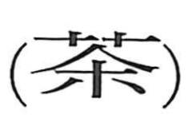

茶

Kun: | On: cha, sa
tea ・ tea plant ・ tea leaves
Explanation
茶 names tea, its leaves, and the drink made from them. The graph is absent from the oldest dictionaries. Its earlier form was probably 荼, combining 艸, plants, with the sound element 余. An early description of a ‘bitter 荼’ refers to the plant later written 茶.
As tea drinking developed, 茶 became the specialized written form for this plant. Its cultivation, preparation, and drinking were described in detail in the Tang period, and tea became a familiar pleasure of educated life in later centuries. In Japan, its preparation developed into the tea ceremony. The character’s form therefore belongs to the naming of a plant, while the cultural practices gathered around the drink grew much later.